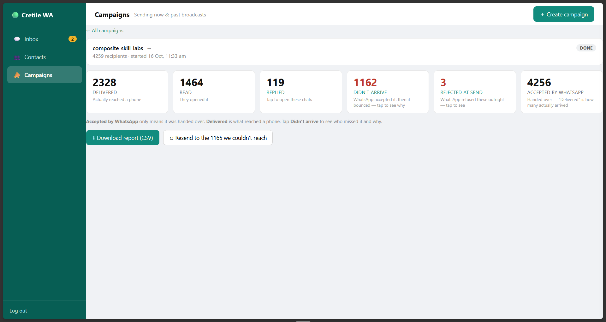

Product design0→1 internal productLive
Bringing Cretile’s WhatsApp sales workflow into one place
I designed and built Cretile’s internal tool for safer campaigns and timely follow-ups.
Before designing
I mapped the situations our team would face before deciding what to build.
I was already creating campaigns at Cretile, so I started with the work surrounding them. Sometimes I needed a reusable audience built with tags; other times, I only wanted to hand-pick a few contacts. Before launching, I needed to know the message and audience were correct. After launch, sales needed to see which conversations were still open, what happened to each message and what required follow-up.
These situations became the structure for the first version.
Product strategy
Replacing a campaign tool was not enough reason to build.
Losing our Meta account forced a new number—and a choice.
Reconnect the tool
Restore the same workflow.
Build the first module
Own the workflow and future automation.
Use case 01 · Choose an audience
A one-off campaign should not require inventing a tag.
Interakt pushed every group through the same setup. I kept tags for reusable audiences and added direct selection for exceptions.
Previous one-off flow
- 01Upload
- 02Add tag
- 03Select tag
- 04Campaign
Principle
Flexibility and efficiency of use
Principle
Direct manipulation
Use case 02 · Launch safely
Launch the right campaign with confidence.
Preview and opt-out checks prevent mistakes; Undo keeps the final action reversible.

Principle
Error prevention
Principle
User control and freedom
What changedThe team is more relaxed at launch.
Use case 03 · Manage replies
A closed reply window should look closed.
The interface separates an open conversation from one that now requires an approved template.
Write a reply…
The 24-hour reply window has closed.
Use an approved WhatsApp template.
Principle
Visibility of system status
Use case 04 · Learn and retry
Results should lead to the next action.
The report helps me inform the team who was reached and resend to failed contacts.

Principle
Actionable feedback
Use case 05 · Automate
Keep follow-ups moving while I’m away.
Claude matches each selected option to the relevant response.
Lead choice
ABCD
Claude matchesChoice → reply
CretileFollow-up sent
Principle
Cognitive offloading
The product today
One place to launch campaigns and continue conversations.
The live release joins contacts, campaigns, analytics and inbox safeguards for me and one salesperson.

Next direction · not yet built
Carry lead context forward from the first enquiry.
Next, the website, WhatsApp and sales can share lead context.
- 01Website enquiry
- 02Lead record
- 03Brochure delivery
- 04WhatsApp
- 05Sales owner
- 06Qualification
What I learned
A custom product earns its place by capturing how the team works—not by recreating an existing tool.